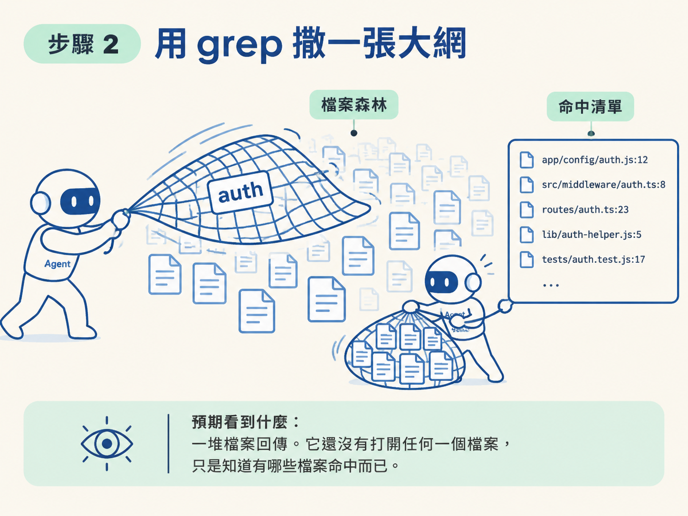
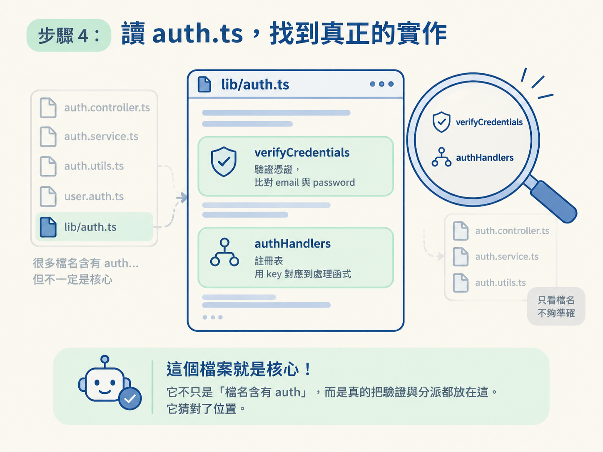
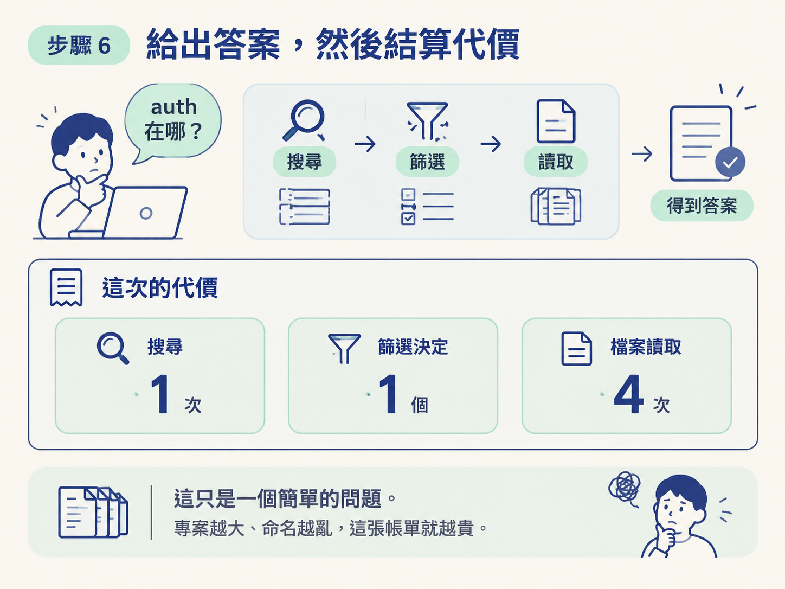

<!DOCTYPE html>
<html lang="zh-Hant">
<head>
<meta charset="UTF-8">
<meta name="viewport" content="width=device-width, initial-scale=1.0">
<title>追一次「auth 在哪」：搜尋、篩選、四次讀取</title>
<link rel="stylesheet" href="../assets/shared.css">
</head>
<body>

<h1>追一次「auth 在哪」：搜尋、篩選、四次讀取</h1>
<p class="meta">Step 3/4 · 一個簡單問題，要花幾個 tool call 才答得出來</p>

<h2>學習目標</h2>
<p>照著 agent 的順序追一次「auth 在哪裡」：先 grep 撒網、再依檔名與上下文篩選、最後逐檔讀取。做完你能親口說出一個簡單問題花了幾個 tool call，並把這個數字當成之後判斷專案結構好不好的依據。</p>

<h2>前言：動手前，先講清楚你要看到什麼</h2>

<p>想像你在一個完全陌生的 codebase 裡，被問一句「auth 在哪裡處理？」。你沒有索引、沒有地圖，手上只有搜尋和開檔兩件事能做。你會怎麼走？</p>

<p>前兩節給了你兩個零件：第一，agent 只知道自己讀過的東西；第二，它讀東西只靠 grep、glob、read 這類工具。這一節把這兩個零件裝起來，在課程示範用的那個小專案上，跑一遍完整流程。</p>

<p>前置條件很簡單：你只要知道它沒有索引、知道它會先搜尋再讀檔，就可以跟著做。跑完你會拿到一個具體的量級感：一個「auth 在哪」這種看似簡單的問題，實際上要花掉一次搜尋、一個篩選決定、四次檔案讀取。這個數字之後會直接變成你判斷專案結構好不好的依據，所以我們一步一步走，看清楚每個 tool call 在做什麼。</p>

<h2>步驟 1：設定場景，然後問一個模糊的問題</h2>

<p>場景是課程示範用的那個小專案。agent 開在一個全新的 context 上，對這個專案一無所知。你丟給它的問題是：</p>

<blockquote>
where is auth handled in this project?（這個專案的 auth 在哪裡處理？）
</blockquote>

<p><strong>做了什麼：</strong>問一個刻意模糊的問題。<strong>預期看到什麼：</strong>它不回答，它開始搜尋。這一步要記住的是那個反直覺的順序：先動手，不是先動嘴。</p>

<h2>步驟 2：用 grep 撒一張大網</h2>

<p>它透過 bash 去撈檔案。把 bash 裡實際執行的東西展開，會看到它就是一條很普通的 grep，關鍵字是 <code>auth</code>。概念上大概長這樣：</p>

<pre data-provenance="derived">grep -rn "auth" --include="*.ts" --include="*.tsx" .</pre>

<p>這條指令的意思很直白：從當前目錄往下、遞迴搜尋所有 <code>.ts</code> 與 <code>.tsx</code> 檔案，找出含有 <code>auth</code> 這個字的每一行，並附上檔名與行號。</p>

<p>為什麼要掃這麼寬？因為在這個當下，它還不知道 auth 落在哪個資料夾。它唯一有把握的，是這個專案大概是用 TypeScript 寫的。所以它先用最寬的關鍵字，把「可能相關」的位置全部撈出來。</p>

<p><strong>預期看到什麼：</strong>一堆檔案回傳。這裡的關鍵是：它<strong>還沒有打開任何一個檔案</strong>，只是知道有哪些檔案命中而已。</p>

<figure class="lesson-figure"><figcaption>AI 生成示意圖</figcaption></figure>

<h2>步驟 3：先篩選，不急著開檔</h2>

<p>搜尋結果回來一長串之後，它沒有照順序一個個打開。它先做一個判斷：依<strong>檔名</strong>與<strong>命中處的上下文</strong>，挑出真正相關的那幾個。</p>

<p>這一步是整個流程裡最容易被忽略的動作。它省下的成本很可觀，如果不篩選，直接把命中的檔案全開一遍，context 會被一大堆無關內容塞滿。篩選看起來只是「想一下」，但它是後面「只讀四個檔案」的前提。</p>

<h2>步驟 4：讀 <code>auth.ts</code>，找到真正的實作</h2>

<p>篩選完，它打開第一個檔案，就是 <code>lib/auth.ts</code>。它會讀到這個檔案裡真正管事的兩塊。第一塊是驗證憑證：</p>

<pre data-source="sources/agentic-engineer/20261014/ai-course-demos/001-login-btn-issue/lib/auth.ts">export function verifyCredentials(email: string, password: string): User | null {
  const user = USERS.find((u) => u.email === email);
  if (!user || user.password !== password) {
    return null;
  }
  return user;
}</pre>

<p>第二塊是 auth handler 的註冊表，把不同的 auth 流程用 key 對應到處理函式：</p>

<pre data-source="sources/agentic-engineer/20261014/ai-course-demos/001-login-btn-issue/lib/auth.ts">export const authHandlers: Record<string, AuthHandler> = {
  authenticate: async (formData) => {
    const email = String(formData.get("email") ?? "");
    const password = String(formData.get("password") ?? "");

    const user = verifyCredentials(email, password);
    if (!user) {
      return { success: false, error: "Invalid email or password." };
    }

    await createSession(user.id);
    return { success: true };
  },</pre>

<p><strong>預期看到的結論：</strong>這個檔案是對的，auth 的核心實作真的在這裡。它不只是「檔名含有 auth」，而是真的把驗證與分派都放在這。它猜對了位置。</p>

<figure class="lesson-figure"><figcaption>AI 生成示意圖</figcaption></figure>

<h2>步驟 5：順著 import 摸到其他層</h2>

<p>讀完 <code>auth.ts</code>，它並沒有停手。它會沿著這個檔案引用到的東西繼續讀下去。例如檔案開頭這一行：</p>

<pre data-source="sources/agentic-engineer/20261014/ai-course-demos/001-login-btn-issue/lib/auth.ts">import { createSession, deleteSession } from "@/lib/session";</pre>

<p>這條 import 把它指向 session 那一層。同樣地，它會去讀真正被表單呼叫的那個 action，也就是 <code>app/actions/auth-actions.ts</code>：</p>

<pre data-source="sources/agentic-engineer/20261014/ai-course-demos/001-login-btn-issue/app/actions/auth-actions.ts">export async function login(
  _prevState: LoginState,
  formData: FormData
): Promise<LoginState> {
  const handler = authHandlers["login"];
  const outcome = await handler?.(formData);

  if (outcome?.success) {
    redirect("/dashboard");
  }

  return { error: outcome?.error };
}</pre>

<p><strong>預期看到什麼：</strong>從這一個檔案出發，auth 會像蜘蛛網一樣連到 session 與 actions 兩層。這就是它從「我找到一個可能相關的檔案」跨到「我真的理解它怎麼運作」的那一刻。</p>

<h2>步驟 6：給出答案，然後結算代價</h2>

<p>最後它回你一段答案，大意是：這個專案的 auth 分散在四層，credentials 與 handler registry 在 <code>lib/auth.ts</code>，另外還讀了 sessions、actions，以及把關的 proxy。這份答案是準的，因為它直接指名了檔案與函式。</p>

<p>但重點在代價。為了回答這個問題，它總共花了：</p>

<table>
<thead>
<tr><th>動作</th><th>數量</th></tr>
</thead>
<tbody>
<tr><td>一次搜尋（grep）</td><td>1</td></tr>
<tr><td>一個篩選決定</td><td>1</td></tr>
<tr><td>檔案讀取</td><td>4</td></tr>
</tbody>
</table>

<p>幾個 tool call，只是為了一個簡單問題。而這還是在一個刻意做小、做得很好讀的示範專案上。專案越大、命名越亂，這條路就會越長。所以「命名與結構」不是無關痛癢的風格問題，它直接決定你要付幾次搜尋、幾個檔案、多少 context。原理的部分下一節會好好講，這一節先把流程記牢。</p>

<figure class="lesson-figure"><figcaption>AI 生成示意圖</figcaption></figure>

<h2>小結</h2>

<blockquote>
追一次「auth 在哪」的完整路徑是：先 grep 撒大網（不開檔）→ 依檔名與上下文篩選 → 讀 <code>auth.ts</code> 找到核心實作 → 順著 import 摸到 session、actions、proxy → 給出「auth 分四層」的答案。整趟下來是一次搜尋、一個篩選決定、四次讀取。這就是在沒有索引的世界裡，一個簡單問題的真實成本。
</blockquote>

<p>做完這六步，你可以驗證自己真的跟上了：合上畫面，說得出這條路徑的四個動作順序，以及那三個數字（1 搜尋、1 篩選、4 讀取），就代表流程已經在你手上。至於「為什麼成本長這樣、怎麼把成本壓下來」，那是原理，交給下一節。</p>

<p>看清楚這條路徑之後，一個很實際的念頭會浮上來：既然它每次都要靠搜尋認路，那我能不能把路鋪平一點，讓它少搜幾次？下一節把這個念頭變成一個可以當場用的判斷：什麼時候值得花力氣在命名與結構上，什麼時候不值得。</p>

<div class="lesson-nav">
  <div><a href="./no-index-just-search.html">← 上一步：沒有索引：grep、glob、read 就是它認路的全部</a></div>
  <div><a href="./naming-as-a-lever.html">下一步：命名與結構是效能槓桿，不是風格偏好 →</a></div>
</div>

<h2>複習題</h2>

<div class="quiz" data-question="在全新 context 問「auth 在哪」，它第一個動作是什麼？" data-correct="1" data-explain="它不會先回答，而是先用 grep 搜尋，把可能的位置撈出來。">
  <button class="opt">直接給出一段完整答案</button>
  <button class="opt">先用 grep 搜尋再讀取</button>
  <button class="opt">先請你補上檔案路徑</button>
  <button class="opt">先開啟所有 .ts 檔案</button>
</div>
<div class="quiz" data-question="grep 撒完網、拿到一堆命中檔案之後，它下一步做什麼？" data-correct="2" data-explain="它先依檔名與命中處上下文篩選，還沒開始打開檔案。">
  <button class="opt">立刻按順序把每個檔打開</button>
  <button class="opt">把命中的檔案全部刪掉</button>
  <button class="opt">依檔名與上下文做篩選</button>
  <button class="opt">直接跳到最後回答問題</button>
</div>
<div class="quiz" data-question="為什麼它一開始要撒一張很大的網？" data-correct="1" data-explain="它還不知道 auth 在哪個資料夾，只能先用最寬的關鍵字掃一遍。">
  <button class="opt">因為大範圍搜尋比較省 token</button>
  <button class="opt">因為它還不知道 auth 在哪</button>
  <button class="opt">因為小範圍搜尋工具不支援</button>
  <button class="opt">因為它想一次讀完所有檔案</button>
</div>
<div class="quiz" data-question="它第一個打開的檔案是什麼，預期看到什麼？" data-correct="0" data-explain="它打開 lib/auth.ts，並發現 auth 的核心實作真的就在這裡。">
  <button class="opt">lib/auth.ts，核心實作真的在這</button>
  <button class="opt">package.json，先看裝了哪些套件</button>
  <button class="opt">README，先讀專案說明文件</button>
  <button class="opt">proxy，先確認誰在擋門口</button>
</div>
<div class="quiz" data-question="它怎麼從 auth.ts 摸到 session 這一層？" data-correct="1" data-explain="它沿著檔案裡的 import 繼續讀，例如從 auth.ts 連到 session。">
  <button class="opt">它重新跑一次關鍵字搜尋</button>
  <button class="opt">它順著檔案的 import 繼續讀</button>
  <button class="opt">它問你 session 放在哪裡</button>
  <button class="opt">它先建立一份專案索引</button>
</div>
<div class="quiz" data-question="回答「auth 在哪」，總共花了大約多少成本？" data-correct="2" data-explain="一次搜尋、一個篩選決定、四次檔案讀取，只是為了一個簡單問題。">
  <button class="opt">零個 tool call，憑記憶回答</button>
  <button class="opt">一次讀取就找到全部答案</button>
  <button class="opt">一次搜尋、一篩選、四次讀取</button>
  <button class="opt">八十次讀取才拼出答案</button>
</div>

<div class="footer">
  <p>agentic-engineer · Agent 如何讀你的程式庫 · Step 3/4</p>
  <p>讀完有疑問的地方，直接問你的 AI 助教，它可以針對這一步再展開。</p>
</div>

<script src="../assets/quiz.js"></script>
</body>
</html>
